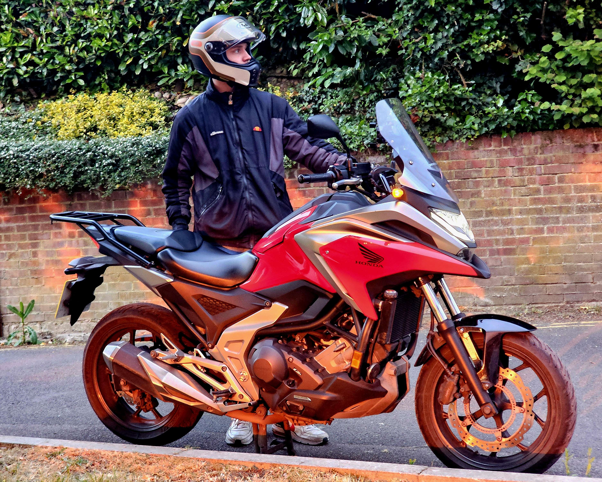

DevOps & Infrastructure
Azure, Kubernetes, and cloud infrastructure automation. CI/CD pipelines with Jenkins and GitLab. Expertise in deployment, networking, and system reliability across hybrid environments.

With hands-on experience across Azure, Kubernetes, and DevOps automation, I help teams ship faster and operate reliably. From CI/CD pipelines to IT support transformations, I deliver infrastructure solutions and documentation that scale.
Azure, Kubernetes, and cloud infrastructure automation. CI/CD pipelines with Jenkins and GitLab. Expertise in deployment, networking, and system reliability across hybrid environments.
Desktop support, system administration, and IT asset management. Experience with Microsoft Intune, MDT, documentation, and leading teams through large-scale technical transitions.
Full-time · City Of London, England, United Kingdom · Hybrid
Mar 2026 - Present · 4 mos
Jul 2025 - Mar 2026 · 9 mos
Jan 2025 - Jul 2025 · 7 mos
GitLab · Jenkins · Kubernetes · Azure · Linux · Bash · PowerShell · Sybase · Akamai · Intune
DEMICA · Full-time · Greater London, England, United Kingdom · Hybrid
Jira · Azure · Microsoft Intune · Hardware Support · Documentation · Office Infrastructure
Kilnbridge · Apprenticeship · Greater London, England, United Kingdom · On-site
Helpdesk · Engine · Kaseya · Microsoft Intune · MDT · Windows Deployment · Access Management
Responsive single-page CV portfolio with dark/light theme toggle, animated scroll effects, and modern design showcasing professional experience and technical expertise.
Contact meBuilt IT asset management, created Jira reporting dashboards, and developed comprehensive process documentation that improved team efficiency and reduced onboarding time.
See experienceWhen I'm not building infrastructure, you'll find me out on the road. I'm passionate about motorcycles and the freedom that riding brings—whether it's cruising through the countryside or exploring new routes.
Lately, I've picked up fishing as a way to disconnect and enjoy nature. There's something meditative about the water and the patience it requires.
Music is also a big part of my life. I play bass guitar and love exploring different genres, from classic rock to modern stuff. It's a creative outlet that balances the technical side of my work.



If you’d like to collaborate on a project, review my CV, or discuss opportunities, I’m happy to connect.
Email
michael.tigin-gerber@pm.me
Location
Remote / Flexible
4.5+ years professional IT experience, DevOps specialist in Azure and Kubernetes, strong background in infrastructure automation and IT operations.